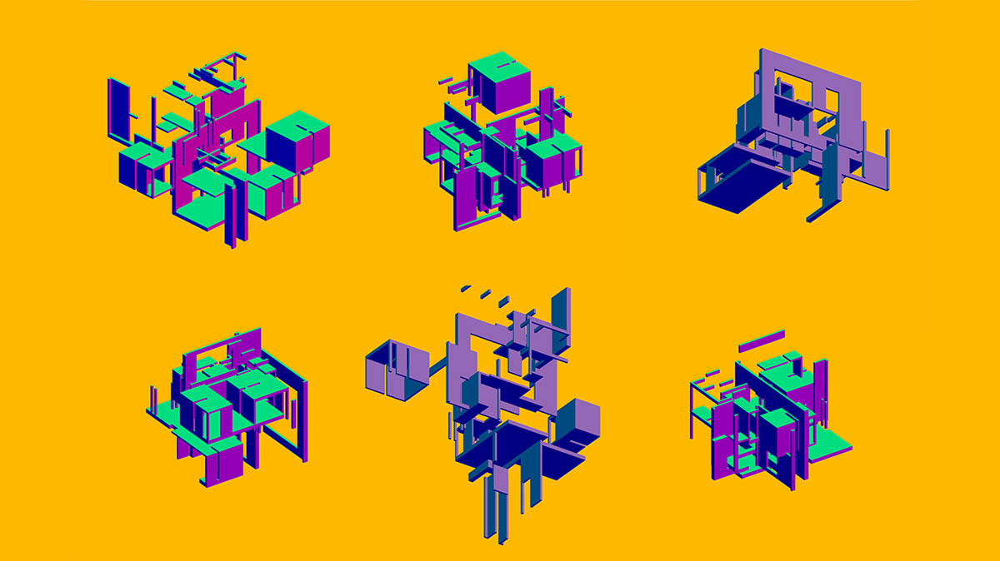
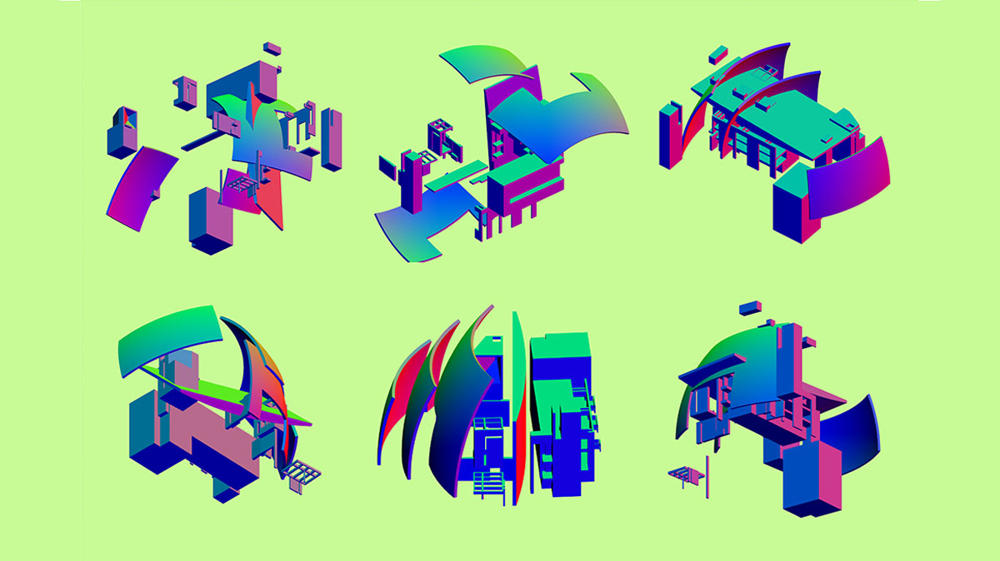
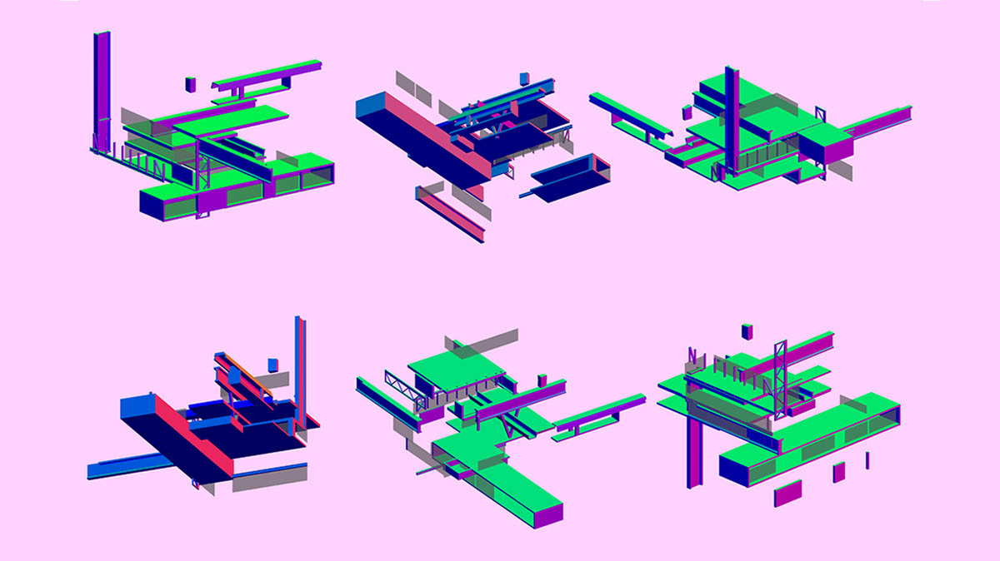

A series of interactive web apps that deconstruct the constructivist style of various architectural icons. Inspired by the art style of the early constructivists, the series dissects the architectonic elements of buildings by Peter Eisenman, Richard Meier and stuido Ensamble to create an interactive experience with multiple permutations.
Demonstration of the web app on a mobile device
I created this series of interactive sketches as a fun exercise to explore the key elements of some of my favorite architectural works. The current series features three buildings: House VI by Peter Eisenman, Church of 2000 by Richard Meier, and Casa Hemeroscopium by Studio Ensamble. Users can engage with the app by using their mouse cursor or the gyroscope sensors on their phones.
The individual volumes that create the outer form of each building are broken down into different layers, which users can randomly transform to create unique compositions with every iteration. Despite the transformations, the resultant compositions still maintain the original essence of the building, which speaks to the strength of the architectural language used by the designers. I built these apps using the P5.js framework, and I plan to expand the list with more buildings in the future.
Deconstructing Eisenman
Move the cursor/touch inside the frame above to interact. Click and drag to roatate the model.

Various permutations from "Deconstructing Eisenman"
Deconstructing Meier
Move the cursor/touch inside the frame above to interact. Click and drag to roatate the model.

Various permutations from "Deconstructing Meier"
Deconstructing Ensamble
Move the cursor/touch inside the frame above to interact. Click and drag to roatate the model.

Various permutations from "Deconstructing Ensamble"